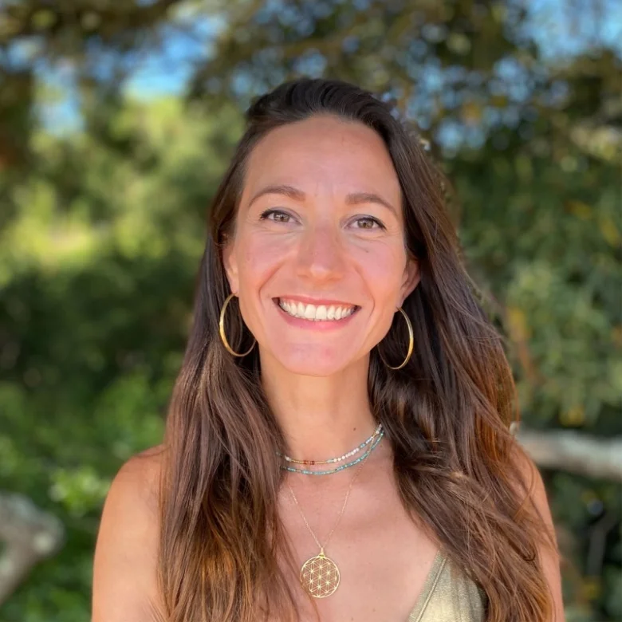

Un jour, tu lèves la tête. 15, 20 ans de carrière. Passés. Comme ça.
Est-ce que tu as choisi cette vie, ou tu l'as juste laissée se dérouler ?
Cette question, tu la repousses depuis longtemps. Mais elle revient quand même.
Sauf que ce métier, c'est tout ce que tu as connu. Alors changer maintenant… ça fait peur.
Faire le point n'est pas un aveu d'échec. C'est souvent le seul moyen d'avancer sereinement.
Objectif :
Sortir avec une direction claire et activable, pas juste une impression de direction.
À elles seules, les personnes qui composent l'équipe Ascencio ont déjà accompagné plus de 1000 parcours professionnels, en insertion, en reconversion, en recherche d'emploi.
-
EstellePsychologue en orientation
"Depuis 8 ans je développe des projets et j'aide à orienter des profils pour identifier des projets qui correspondent à leurs compétences et aspirations."
-
DanielCoach en orientation, certifié PNL
"J'ai connu la perte de sens, jusqu'à tout recommencer à zéro. Depuis 6 ans, j'accompagne ceux qui vivent la même bascule."
-
LaureenSpécialiste en recrutement
"15 ans à recruter, placer et suivre des talents, de l'autre côté de la table. Je sais ce qui fait vraiment la différence — et je te le transmets."
-

DelphineCoach en orientation"Diététicienne, manager événementiel, responsable talents : ma carrière a été faite de changements faute d'avoir été bien orientée. Aujourd'hui, je m'assure que toi, tu n'aies pas à expérimenter mon vécu."
-
AlicePsychologue en orientation
Le plan qu'on te propose :
- 01 Un appel gratuit, 30 minutes Pour évaluer ta situation, sans obligation derrière.
- 02 Un plan d'accompagnement personnalisé Construit pour toi, à partir de ta réalité.
- 03 Suivi sans engagement Dans lequel tu avances à ton rythme.
Rien ne s'effondre d'un coup. Le vrai enjeu, c'est l'usure lente.
Aucun de ces points n'est irréversible aujourd'hui. Mais plus tu attends, plus le changement coûte cher, en énergie, en temps.
Les créneaux de diagnostic sont limités chaque semaine.
Réserver mon appel gratuit →Questions fréquentes
Je n'ai rien de grave. C'est peut-être juste une phase, ça va passer.
Peut-être. Mais si cette question revient depuis un moment, ce n'est probablement pas rien non plus. L'appel ne sert pas à dramatiser, juste à voir si c'est une phase, ou le signal de quelque chose à regarder de plus près.
Est-ce que ce n'est pas trop tard pour changer, à mon âge ?
C'est justement une des questions qu'on entend le plus souvent, et rarement une bonne raison de ne pas se la poser. Changer à 45 ou 50 ans ne veut pas dire tout recommencer à zéro : la plupart des personnes accompagnées gardent une bonne partie de ce qu'elles ont construit, elles l'utilisent juste autrement.
Je ne sais même pas ce qui ne va pas. Juste que quelque chose cloche.
Tu n'as pas besoin de savoir avant d'appeler. C'est même souvent le point de départ : une sensation diffuse, sans nom précis. L'appel sert justement à commencer à la nommer.
Combien ça coûte ?
Ça dépend de ce dont tu as besoin, c'est justement ce que le premier appel permet de clarifier. Nos accompagnements démarrent à 150.–/h.
Et si je ne sais pas encore vers quoi aller ?
C'est justement le rôle de l'appel de 30 minutes : clarifier avant de décider.
Est-ce confidentiel ?
Oui, entièrement. Rien n'est partagé.
Ce sont de vrais professionnels, ou juste des gens qui ont vécu la même chose que moi ?
Les deux à la fois. Chacun est sélectionné pour sa formation certifiée mais aussi pour son vécu personnel qui vient enrichir l'accompagnement, pas le remplacer.
Qu'est-ce qui se passe après l'appel ?
Une lecture claire de ta situation, et, si ça a du sens, une proposition adaptée d'accompagnement. Aucune obligation.
Suis-je obligé de m'engager sur un accompagnement complet ?
Non. Chaque accompagnement est sans engagement.
Combien de temps dure le premier appel ?
30 minutes, sans engagement.